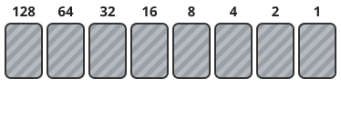

Bits and bytes
Learn with an AI tutor
An AI tutor explains this page to you and helps you with the exercises. Choose your assistant:
Open with Claude Open with ChatGPT Open with Mistral Vibe
You use your own account with the provider. The assistant is not offered by lernapps.net: lernapps only provides the content and the exercises. The choice holds for all pages, on this device only.
Eight cards at once
At Seeberg, Mia takes lots of photos with her tablet. “Will the storage be full soon?” asks Jona. To answer that, you need to know how amounts of data are measured.
On the pages before you worked with five cards. A computer usually groups eight bits together.

© CC-BY-4.0Eight bit cards. The values keep doubling to the left.
Exercise
Solution
Right answer: 255
128 + 64 + 32 + 16 + 8 + 4 + 2 + 1 = 255. So with eight bits there are the numbers 0 to 255.
One byte is 8 bits
- byte
One byte is 8 bits, like a row of eight bit cards. In one byte you can store, for example, a number from 0 to 255.
There are bigger units for large amounts of data. Each one is 1000 times as big as the one before. The sizes for the text, photo and film are only rough, they depend on the device.
| Unit | size | example, roughly |
|---|---|---|
| 1 byte (B) | 8 bits | a number from 0 to 255 |
| 1 kilobyte (kB) | 1000 bytes | half a page of text |
| 1 megabyte (MB) | 1000 kB | a photo is about 3 MB |
| 1 gigabyte (GB) | 1000 MB | a film is about 2 GB |
Remember
Bit and byte are not the same: 1 byte = 8 bits. “Kilo” means 1000, as in kilogram and kilometre. Some devices count with 1024, you will learn about that later.
Try it out
Here are eight cards, which is one byte. Tap a card to turn it over. Below the cards you can see the bit string. Make the number, then press “Check”.
Exercise
Task no. 1
Task no. 1
Lay out the number 173 with eight cards.
Solution
10101101: 128 + 32 + 8 + 4 + 1 = 173
Solution
10101101: 128 + 32 + 8 + 4 + 1 = 173
11000101: 128 + 64 + 4 + 1 = 197
11000010: 128 + 64 + 2 = 194
11101111: 128 + 64 + 32 + 8 + 4 + 2 + 1 = 239
10111010: 128 + 32 + 16 + 8 + 2 = 186
10010110: 128 + 16 + 4 + 2 = 150
00100011: 32 + 2 + 1 = 35
01000101: 64 + 4 + 1 = 69
01001110: 64 + 8 + 4 + 2 = 78
10010001: 128 + 16 + 1 = 145
10010011: 128 + 16 + 2 + 1 = 147
01100001: 64 + 32 + 1 = 97
10100000: 128 + 32 = 160
10000110: 128 + 4 + 2 = 134
01010110: 64 + 16 + 4 + 2 = 86
10101110: 128 + 32 + 8 + 4 + 2 = 174
10111000: 128 + 32 + 16 + 8 = 184
01111001: 64 + 32 + 16 + 8 + 1 = 121
00101110: 32 + 8 + 4 + 2 = 46
11001001: 128 + 64 + 8 + 1 = 201
10000011: 128 + 2 + 1 = 131
10101100: 128 + 32 + 8 + 4 = 172
00110101: 32 + 16 + 4 + 1 = 53
01101011: 64 + 32 + 8 + 2 + 1 = 107
10100111: 128 + 32 + 4 + 2 + 1 = 167
01111010: 64 + 32 + 16 + 8 + 2 = 122
10000010: 128 + 2 = 130
01010000: 64 + 16 = 80
11100001: 128 + 64 + 32 + 1 = 225
10110111: 128 + 32 + 16 + 4 + 2 + 1 = 183
01110111: 64 + 32 + 16 + 4 + 2 + 1 = 119
10011101: 128 + 16 + 8 + 4 + 1 = 157
10101001: 128 + 32 + 8 + 1 = 169
00100010: 32 + 2 = 34
11110101: 128 + 64 + 32 + 16 + 4 + 1 = 245
10010100: 128 + 16 + 4 = 148
00110001: 32 + 16 + 1 = 49
10110000: 128 + 32 + 16 = 176
11011111: 128 + 64 + 16 + 8 + 4 + 2 + 1 = 223
10101000: 128 + 32 + 8 = 168
11111110: 128 + 64 + 32 + 16 + 8 + 4 + 2 = 254
11011100: 128 + 64 + 16 + 8 + 4 = 220
00101001: 32 + 8 + 1 = 41
11011101: 128 + 64 + 16 + 8 + 4 + 1 = 221
01110100: 64 + 32 + 16 + 4 = 116
10011011: 128 + 16 + 8 + 2 + 1 = 155
01000011: 64 + 2 + 1 = 67
01010001: 64 + 16 + 1 = 81
00101111: 32 + 8 + 4 + 2 + 1 = 47
01011011: 64 + 16 + 8 + 2 + 1 = 91
11000110: 128 + 64 + 4 + 2 = 198
01111000: 64 + 32 + 16 + 8 = 120
01100111: 64 + 32 + 4 + 2 + 1 = 103
10011100: 128 + 16 + 8 + 4 = 156
11001000: 128 + 64 + 8 = 200
11011110: 128 + 64 + 16 + 8 + 4 + 2 = 222
00111000: 32 + 16 + 8 = 56
11111011: 128 + 64 + 32 + 16 + 8 + 2 + 1 = 251
01110010: 64 + 32 + 16 + 2 = 114
11010010: 128 + 64 + 16 + 2 = 210
11001110: 128 + 64 + 8 + 4 + 2 = 206
11001011: 128 + 64 + 8 + 2 + 1 = 203
01010111: 64 + 16 + 4 + 2 + 1 = 87
10011000: 128 + 16 + 8 = 152
00101000: 32 + 8 = 40
11010000: 128 + 64 + 16 = 208
11001010: 128 + 64 + 8 + 2 = 202
Practice
Exercise
Three worked tasks, each with its solution:
Task no. 1
Mia's message to Jona is 12 bytes. How many bits is that?
Hint
1 byte = 8 bits.
Solution
- 1 byte = 8 bits, so 12 bytes = 12 × 8 bits = 96 bits.
Right answer: 96 bits
Task no. 2
Mia's message to Jona is 7 bytes. How many bits is that?
Hint
1 byte = 8 bits.
Solution
- 1 byte = 8 bits, so 7 bytes = 7 × 8 bits = 56 bits.
Right answer: 56 bits
Task no. 3
Mia's message to Jona is 10 bytes. How many bits is that?
Hint
1 byte = 8 bits.
Solution
- 1 byte = 8 bits, so 10 bytes = 10 × 8 bits = 80 bits.
Right answer: 80 bits
Exercise
Three worked tasks, each with its solution:
Task no. 1
A message has 56 bits. How many bytes is that?
Hint
8 bits are 1 byte.
Solution
- 8 bits = 1 byte, so 56 bits = 56 ÷ 8 bytes = 7 bytes.
Right answer: 7 bytes
Task no. 2
A message has 80 bits. How many bytes is that?
Hint
8 bits are 1 byte.
Solution
- 8 bits = 1 byte, so 80 bits = 80 ÷ 8 bytes = 10 bytes.
Right answer: 10 bytes
Task no. 3
A message has 24 bits. How many bytes is that?
Hint
8 bits are 1 byte.
Solution
- 8 bits = 1 byte, so 24 bits = 24 ÷ 8 bytes = 3 bytes.
Right answer: 3 bytes
Exercise
Three worked tasks, each with its solution:
Task no. 1
A small picture is 3 kB. How many bytes is that?
Solution
- 1 kB = 1000 bytes, so 3 kB = 3 × 1000 bytes = 3,000 bytes.
Right answer: 3,000 bytes
Task no. 2
A small picture is 4 kB. How many bytes is that?
Solution
- 1 kB = 1000 bytes, so 4 kB = 4 × 1000 bytes = 4,000 bytes.
Right answer: 4,000 bytes
Task no. 3
A small picture is 7 kB. How many bytes is that?
Solution
- 1 kB = 1000 bytes, so 7 kB = 7 × 1000 bytes = 7,000 bytes.
Right answer: 7,000 bytes
Exercise
Solution
Right answer: 1. 1 bit, 2. 1 byte, 3. 1 kilobyte, 4. 1 megabyte, 5. 1 gigabyte
One byte is 8 bits. After that, each unit is 1000 times as big as the one before.
Exercise
Solution
Right answer: a page of text for the school magazine – 2 kB; a photo of Seeberg – 3 MB; a film for the evening – 2 GB
A text needs little space, a photo much more and a film the most, because it is made of very many pictures and sound.
Exercise
Solution
Right answer: 1,000 photos
3 GB = 3000 MB. 3000 MB ÷ 3 MB = 1000 photos. The storage will last a long time.
Looking back on the chapter: you know codes from everyday life, you can read and make numbers with bit cards, and you know how much a byte is. A photo has millions of bytes. In the next chapter you will see how a picture is made of bits.
Found a mistake or have an idea for this app?